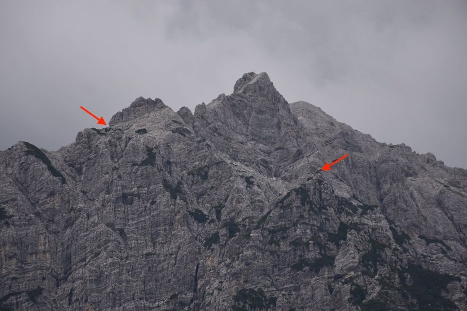

Greta mi propone questa salita che ha trovato su internet: abboccato subito. Fortuna che nel mio archivio avevo delle foto abbastanza dettagliate di quel versante, scattate dalla cima del Dosàip.
Si voleva fare anche la traversata alle Caserine Alte, ma nonostante un giorno di riposo, ero alquanto stanco dopo le 15 ore della Semide (sic!), per cui ci siamo accontentati delle Caserine Basse realizzando comunque un anello di grande soddisfazione e impegno.
Ci fermiamo un secondo a Claut a rifornirci d'acqua e scatto questa foto verso Cima dei Viéres: mai avrei pensato venisse così bene!
Partiamo dalle Grave di Gere: imponente e misterioso Caserine Basse, che troneggia come una enorme fortezza. Devo dire che mi piace di più di Caserine Alte: questa è morfologicamente più complessa, piena di canaloni, costoni di mughi, cenge, torrioni, insomma: terreno da bestie che più mi piace.
Saliamo verso Caserata: la vista si apre verso la Frata de Barbìn - salita un mese prima in memorabile traversata - e il Cornagèt. Torneremo che ci sono un sacco di cose da fare!
Eccoci ai ciolòns dove iniziamo ad attaccare il monte. Iniziamo ad avere qualche dubbio quando inizia a piovigginare!
La vista verso il Dosàip con il suo altipiano è qualcosa di stupendo, soprattutto con questa luce.

Basta seguire le tracce dei camosci e i passaggi più semplici e si arriva in cima.
Non escluso che la via fosse conosciuta dai cacciatori.
La via diventa labirintica da fare in discesa, e all'apparenza piena di salti: ogni volta che ci si volta sembra impossibile essere passati.
Laggiù Caserata.
Ci divertiamo proprio.
Bella cengia che permette di traversare fino a «Il Forte».
La si vede bene pure dalle Grave di Gere.
Quest'altra invece, in direzione opposta, porta verso la cresta Sud e forse ci si può congiungere con la via Dal Tin - Toffolutti, che però è ben oltre lo sperone in foto. Dalle linee di livello della CTR credo che prima dello sperone si possa salire per paretine verso i pendii sommitali.
Mi servirebbero delle foto con più zoom, fatte dal Dosàip come quelle che ho già, oltre a qualche foto fatta da più a Ovest, ad esempio dal Pinzàt.
Ormai prossimi alla meta. Cerco di imprimermi nella mente dei riferimenti per essere in grado di ritrovarla in discesa.
Finalmente in cima.
Verso i canali di Meduna.
Verso la Frata de Barbìn e il Cornagèt... ma quante belle cenge! Vedo diversi percorsi fatti da Luca Basso che vorrei tentare.

Cima Leadicia, col pendio che porta al Clapòn dal Vuâr.
Domanzòn con dietro la dorsale del Resettùm.
Laggiù il Pramaggiore, con evidente il canale Sud e la rampa Sud-Est che abbiamo percorso due anni fa in una bellissima gita autunnale.
Verso Caserine Alte: mi è dispiaciuto non continuare sulla cresta, l'occasione c'era, ma tanto poco non c'abbiamo messo a salire qui, e come dicevo all'inizio eravamo già partiti parecchio stanchi. Decidiamo allora di scendere per la via Dal Tin - Toffolutti. Ci sarebbe un'altra via che Greta conosce ma toccava poi risalire 300m, per questa volta no grazie!
La cima di Bortolusc, con in evidenza il canale Est, in bella luce.
Verso Caserata e il Dosàip.
24 giugno 2024.
Iniziamo a scendere e ad andare in cerca della via, cosa non troppo scontata.
Non proprio invitante.
Nel punto peggiore comincia pure a piovere!
L'ambiente è sempre bello e severo.
Come non guardare lo Spiciòn che mi ha fatto tornare a casa all'una di notte!
Non riesco a staccare gli occhi dal Dosàip, da qui ancora più bello grazie al contrasto fra le pareti verticali che danno sul versante tramontino e il bel catino sommitale.
Finalmente sul sentiero per Palasimòn. Anche qui mi scoccia non fare un salto in cima ma le gambe non girano più.
Ma che bel posto Caserata!
Si vede benissimo la Fratta: che bello rivivere quei momenti quando camminavamo sui pendii sommitali, per ora vedere il percorso da qui.
Intermezzo: percorrendo il CAI 398 verso Caserata, dopo l'uscita dal bosco si nota sull'altro versante una evidentissima traccia, ed effettivamente sulla Tabacco è riportato un sentiero a puntini neri che sale diretto in sx orografica del ciol de Caserata. Questa traccia l'ho vista anche questa volta e mi è subito tornata la voglia di percorrerla, dato che non ho mai trovato alcuna descrizione a riguardo. Ricordo però che in un video su Youtube un tale diceva che gli avevano raccontato di uno che lavorava alla malga che ignorava i sentieri e saliva dritto per dritto per fare prima: credo si riferisse al suddetto sentiero.
Purtroppo nei pressi del bivacco non c'è traccia di questo sentiero: possiamo aver sbagliato noi, ma di evidente non c'è nulla. Poi nella parte intermedia è molto evidente, meno in quella finale, ma lì sono presenti molti alberetti tagliati a metà altezza a mo' di segnavia e non si può sbagliare.

Guardiamo con soddisfazione il percorso fatto qualche ora prima.
Ora giù alle Grave da Giere